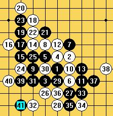

酷妞跟ando的5盘棋
#1 酷妞跟ando的5盘棋 作者：有志青年 发表时间：2006-5-17 21:54:54
#2 Re:酷妞跟ando的5盘棋 作者：幽若 发表时间：2006-5-18 18:32:30
俺咋只看见棋盘捏#3 Re:酷妞跟ando的5盘棋 作者：黄杨 发表时间：2006-6-9 16:40:04
俺啥也看不到,只有一红叉
#4 Re:酷妞跟ando的5盘棋 作者：罗果 发表时间：2006-6-17 23:42:18
是下得不错但总觉得少了些选择#5 Re:酷妞跟ando的5盘棋 作者：笨蛋020 发表时间：2006-12-1 11:11:36
这种在orc的下棋根本体现不出ando的水平，他或者不以为然，或者套别人的研究
#6 Re:酷妞跟ando的5盘棋 作者：风声鹤唳 发表时间：2007-2-1 18:20:24

#7 Re:酷妞跟ando的5盘棋 作者：gerbo 发表时间：2007-2-26 9:34:14
高手对战，看到最后还不知道谁是怎么胜的，真是高手啊~~好好研究下去了#8 Re:酷妞跟ando的5盘棋 作者：逝水连珠 发表时间：2007-3-1 17:10:51
好~~~#9 Re:酷妞跟ando的5盘棋 作者：酷妞δ 发表时间：2007-6-5 9:53:55
棋谱是小天记录的，有盘斜月中间有个次序记错了，其实当时是这样下的：

黑这个下法也不是必胜，只是个骗而已，因为不想在这种场合送研究给外国人。这棋是在QQ游戏下的，那天Ando正好来QQ游戏玩，被sosei发现了，然后把我叫去下了几盘。其实我也觉得在网上砍他没什么意义，只是想实验一下最强的人脑大概什么个水平。
#10 Re:酷妞跟ando的5盘棋 作者：黄药师 发表时间：2007-7-13 21:42:19
楼上，你太强了！
#11 Re:酷妞跟ando的5盘棋 作者：lfzxdh 发表时间：2007-9-24 11:34:36
楼上的楼上 你真是太强了`~~~
#12 Re:酷妞跟ando的5盘棋 作者：中村太郎 发表时间：2008-2-9 14:38:39
我不知道那人是否真的Ando，但我可以确信，实战中连李非都下不过的人，竟然会赢Ando，开着软件下简直丢了国人的脸，或者那个根本不是Ando，两位棋手在同等时间下：15分钟，我想大家不会不知道酷妞的实战水平，她用软件习惯了 ，棋谱又多，离开软件什么水准大家都应该知道#13 Re:酷妞跟ando的5盘棋 作者：≈★诚心★≈ 发表时间：2010-3-1 12:19:20
酷妞这么强 ,去参加比赛 ,得个世界冠军 很容易吗
#14 Re:酷妞跟ando的5盘棋 作者：≈★诚心★≈ 发表时间：2010-3-1 12:22:17
酷妞这么强 去比赛 世界冠军也不行
#15 Re:酷妞跟ando的5盘棋 作者：兔子哥哥 发表时间：2010-3-1 23:01:46
安度还玩qq游戏，太搞笑了吧，哈哈哈，是不是我孤陋寡闻！#16 Re:酷妞跟ando的5盘棋 作者：啊呆 发表时间：2010-7-16 16:34:31
多年的帖子又顶起来了~